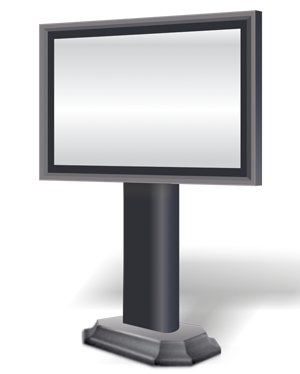

Реклама на Сити-бордах

Ситиборд - это среднего размера технологичный рекламо-носитель, который прекрасно заменяет классические постеры и баннеры в городской черте.
В данном скроллерном устройстве реклама товара осуществляется через специальный короб, закрытый толстостенным антивандальным стеклом, обладающий мощной светодиодной подсветкой и встроенным электродвигателем, который прокручивает до пяти рекламных плакатов с заданными интервалами. Каркас устройства состоит из долговечного алюминиевого профиля, и устанавливается на мощную несущую конструкцию из металла. Стандартный размер 2,7 на 3,7 метра обеспечивает прекрасный обзор и читаемость рекламных поверхностей, как для пешеходов, так и для автомобилистов.
Малый формат более гармонично вписывается в центральные части городов, чем, например, билборды 6 на 3 метра, его установка может быть разрешена там, где щиты запрещены. Ситиборды выгодно отличаются от традиционных щитов за счет внутренней подсветки, что дает больше возможностей для дизайнеров выделять на изображениях отдельные элементы для сквозного подсвечивания.
Учитывая средние габариты и отличную панорамность этих рекламных инсталляций их монтаж предпочтителен в местах пересечения транспортных магистралей, на перекрестках и в зеленых зонах между тротуарами и автомобильными дорогами.
Преимущества перед другими устройствами
Данный вид наружной рекламы благодаря своей динамичности и многофункциональности быстро набирает популярность в Ижевске и обладает рядом важных достоинств:- Возможна аренда как одного изображения, так и всех имеющихся рекламных полотен, что обеспечит проведение мощной и активной рекламной компании;
- У ситиборда осуществляется точное программирование всех параметров от времени демонстрации рекламы и частоты смены баннеров до полной остановки роллерных блоков;
- Интенсивная внутренняя подсветка дает больше возможностей для акцентирования на поверхности отдельных элементов;
- Подвижность изображения сильно влияет на запоминаемость, установлено, что по этому показателю данный носитель информации в несколько раз эффективнее классической уличной рекламы.
Рекламное агентство "Гарант-Реги" предлагает своим клиентам провести энергичную рекламную компанию на сити скроллерах по доступным ценам.